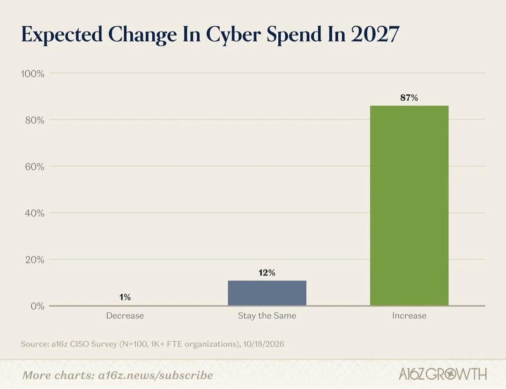
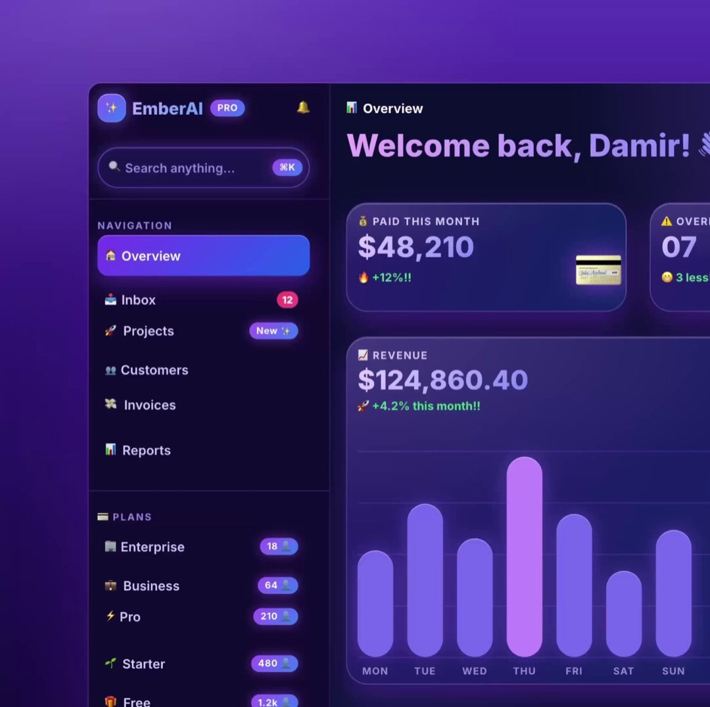
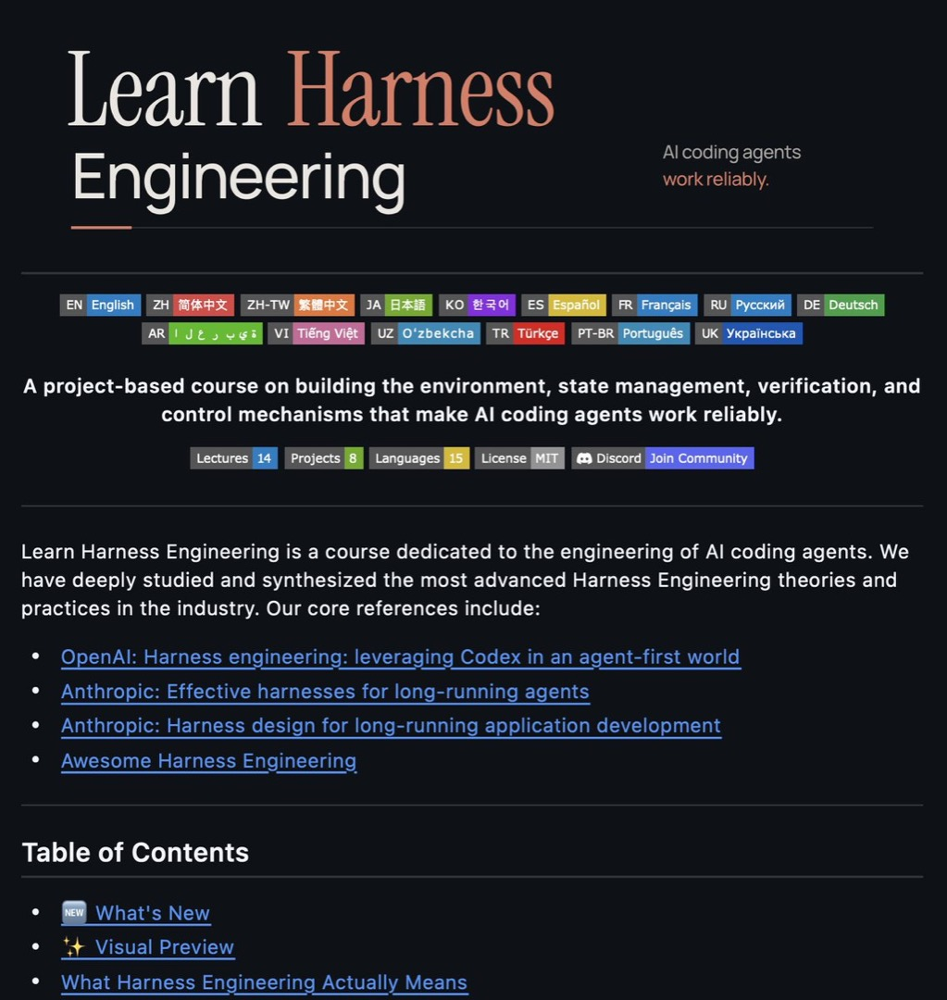

本期速览
01 Anthropic 收购一人生物技术公司
02 RL 环境与机器人数据公司盘点
03 LangChain 开源设计智能体底座
05 AI 成网络安全预算头号驱动
07 Markdown 知识库多烧 40 倍费用
10 AI 编码 Agent 工程课程开源
01｜Anthropic 收购一人生物技术公司
来源（X） · @sundyme · 2026-10-28 20:14
引用内容
Professor Oak @Prof_Oak_
中文译文
惊喜1：Anthropic 收购了一家单人生物技术公司。
.
.
.
惊喜2：那个人就是我
惊喜3：我来这里就是要把这件事原原本本告诉你们
是的，这就是你们想的那样；在6年越来越随意的匿名之后：橡果博士揭秘帖
……是的，这里实在太无聊了，所以我干脆人肉自己来给时间线添点乐子
-------
好的，允许我自我介绍一下。我叫 Cody Tranbarger。我大部分时间在发推，但偶尔也会花时间搞搞药物开发和创立/建设生物技术公司。我的过往履历横跨风险投资、交叉投资、初创企业这个连续谱；橡果博士一直是我在数字世界保持一角之地的方式，尽管我的肉身早已扎根他处。
过去18个月，"他处"指的是 Mithril Medicine，这是我创立的一家公司，致力于开发针对 LAMA2-CMD 及其他 ECM 相关遗传疾病的双特异性抗体。
Mithril 诞生于与 @MikeNGladstone、@JasonPaulRhodes、@LifeSciVC 以及 @atlasventure 团队的实操建设之中。不知怎么的，我在过程中做出了一些还算不错的判断（哪怕坏掉的钟一天也能对两次，对吧？），足以说服他们 Mithril/我值得一笔小额种子轮投资。虽然我几乎无法为如此鲁莽轻率的赌注找到合理的解释，但我对此心怀感激，而且我愿意毫不犹豫地再和 Atlas 合作一次。
按照 Atlas 的一贯作风，Mithril 的原始形态是虚拟的、去中心化的、极度精简的。这个阶段通常很短暂，但对 Mithril 来说，它出奇地运作良好，而且持续得出奇地长，这部分得益于我大量使用的 AI 工具的快速成熟。
最终，Mithril 本身也变成了一个实验——去探索一个单人运营者 + 一堆 Claude（+ 一队出色的兼职顾问）所能达到的规模上限。
与此同时，我开始花时间与 @nc_frey、@an1lam 及 @CoefficientBio 团队共事；并首次体验到了前沿 AI。不久之后，Mithril 看起来不再像一个实验，而开始像一种全新运营模式的预览。
从那次火花中诞生了"一人管线"（Pipeline-in-a-Person）这个概念。当我们4月份在这里分享时，这个想法立刻引起了共鸣；它也是促成 Anthropic 收购 Mithril、我加入团队这一共同愿景的核心。
为什么加入 Anthropic？三个原因。
(1) 对于 Mithril，项目将继续推进，背后有更多资源和基础设施支撑，以及尽可能多的 Claude 投入使用。
(2) 对于我，有机会启动更多项目，并弄清楚一个人到底能同时并行运行多少个项目——这对一个好奇的药物猎人来说几乎是前所未有的奢侈。
(3) 对于我们的使命，一条将这种新工作方式制度化、规模化的路径，然后将其交到全世界所有生物制药从业者手中——坦率地说，这是最让我兴奋的。
AI x Bio 能治愈疾病吗？在任何人看来，毫无疑问是肯定的……但不是通过获得最多曝光的那条路径。与其追求时间线的加速和压缩，我认为编排和并行化才是当下最容易摘到的果实。
大多数药物猎人在职业生涯中只做几次"推进/终止"的判断，其余绝大部分时间都花在来回发邮件上（我的收件箱可以作证）。
给他们足够的带宽来同时运行多个项目，给他们时间专注于科学判断，我敢打赌他们会做出更好的决策。而在规模化的情况下，更好的决策意味着更多药物、更高的命中率、更广泛的患者影响，以及有可能治愈1种、10种或100种疾病。我无比兴奋能在 @AnthropicAI 朝着这个未来建设。
最后，衷心感谢 BioTwitter/X。匿名的终结苦乐参半，但如果有谁配得上一次正式的自我介绍，那就是你们大家。
这个平台为我所做的一切怎么强调都不为过：十年的教育、大量朋友、许多工作机会、几位导师、几位投资者、甚至一位（前）联合创始人。正是这个社区的慷慨激发我在6年前开始发推，在此之前我同样潜伏了6年。我希望我一直在以自己的小小方式将这份慷慨传递下去。
但是，明确一点，橡果博士不会消失。同样的节奏、同样的主题，而且现在，有了药物开发前沿的前排座位。敬请期待来自战线的前线报道；记住……
Gotta Cure 'Em All
原文
Surprise 1: Anthropic acquired a one-person biotech
.
.
.
Surprise 2: that person is me
Surprise 3: I’m here to tell you all about it
Yes, this is what you think it is; after 6 yrs of increasingly loose anonymity: the Professor Oak reveal post
…and yes, it has gotten so boring around here that I’m literally doxxing myself to spice up the timeline
-------
Ok, allow me to introduce myself. My name is Cody Tranbarger. I mostly tweet, but occasionally find time to dabble in drug dev & starting/building biotechs. My past lives span the VC, crossover, startup continuum; Prof Oak has been my way of keeping a digital foot in those worlds, despite having my physical feet planted elsewhere.
The past 18 mo, ‘elsewhere’ was Mithril Medicine, a co. I founded to develop bsAbs for LAMA2-CMD & other ECM-related genetic diseases.
Mithril was born out of hands-on building with @MikeNGladstone, @JasonPaulRhodes, @LifeSciVC, & team @atlasventure. Somehow, I made enough half-decent calls along the way (even a broken clock is right twice a day, eh?) to convince them Mithril/I warranted a small seed. While I can hardly rationalize such an outrageously cavalier bet, I’m grateful for it, & I'd partner with Atlas again in a heartbeat.
In typical AV fashion, Mithril’s primordial form was virtual, decentralized, & ultra-lean. This stage tends to be short-lived, but for Mithril, it worked surprisingly well, for surprisingly long, thanks in part to the rapid maturation of the AI tools I used liberally.
Eventually, Mithril became a bit of an experiment itself - to find the upper bound of how far it could scale as a single operator + a bunch of Claude (+ a stellar bench of part-time consultants).
In parallel, I started spending time with @nc_frey, @an1lam, & @CoefficientBio team; and promptly experienced, for the 1st time, AI at the frontier. Soon thereafter, Mithril stopped looking like an experiment, & started looking like a preview of an entirely new operating model.
From that spark came “Pipeline-in-a-Person.” The idea immediately resonated when we shared it here back in April; and it was central to the shared vision that led to Anthropic’s acquisition of Mithril, & my joining the team.
Why join Anthropic? Three reasons.
(1) For Mithril, the programs continue, with more resources & infrastructure behind them, and as much Claude as I can put to work.
(2) For me, the chance to start several more programs, & find out how many one person can actually run in parallel - an almost unprecedented luxury for a curious drug hunter.
(3) For our mission, a path to institutionalize & scale this new way of working, then put it in the hands of all of biopharma, all over the world - which, candidly, I find the most energizing.
Will AI x Bio cure diseases? Unequivocally yes, imo… but not by the route that gets the most airtime. Rather than timeline acceleration & compression, I see orchestration & parallelization as today's low-hanging fruit.
Most drug hunters see a handful of go/no-go calls in a career, & spend entirely too much of the rest trading emails (my inbox can attest).
Give them the bandwidth to run several programs at once, and the time to focus on scientific judgment, and I’m willing to bet they’ll make better calls. And at scale, better calls translate to more drugs, higher hit rates, broader patient impact, & likely, a disease or 10 or 100 cured. I couldn't be more excited to build toward that future @AnthropicAI.
Finally, a heartfelt thank you to BioTwitter/X. The end of anonymity is bittersweet, but if anyone’s earned a proper introduction, you all have.
It’s difficult to overstate how much this app has done for me: a decade of education, plenty of friends, many job opportunities, several mentors, a few investors, even a co-founder (fmr). It was the generosity of this community that inspired me to start posting 6 years ago, after just as many years lurking. I hope I’ve been able to pay it forward, in my own small way.
But, to be clear, Prof Oak isn’t going anywhere. Same beat, same themes, and now, a front-row seat to drug development at the frontier. Stay tuned for dispatches from the trenches; and remember...
Gotta Cure 'Em All
02｜RL 环境与机器人数据公司盘点
来源（X） · @alacheng · 2026-10-28 21:00
-Designarena @designarena 核心产品是众包（基于人们投票的评估）设计基准：用户输入提示后，平台让多个模型同时生成网站、图片、视频、音频等输出，再以匿名 A vs B 方式让用户投票，最终汇总成 Elo 式排行榜，从而大规模收集主观“品味”与设计偏好信号。这些投票数据被出售给前沿实验室用于模型评估与训练（尤其是设计与美学相关任务），平台已拥有数百万用户，并报告约 6000 万美元年经常性收入，主要来自企业评估合同而非普通用户订阅。
-SherpaLabs @SherpaLabsAI 用于金融和编码的RL环境，是YC W25的项目
-Cntxtai @cntxtai 第一人称真实工作视频用于机器人数据，获得了6000万美元A轮融资
-Maxinsights @MaxinsightsAI 是面向物理 AI / 机器人的第一人称真实世界训练数据供应商，通过付费让数千名承包商在真实家庭、餐厅、酒店等场景佩戴头部、手腕和胸部摄像头，记录做饭、清洁等自然速度的日常工作，已收集超过 200 万小时视频（其中约 150 万小时已处理为可交付数据）。获得了 领投的3000万美元种子轮。
03｜LangChain 开源设计智能体底座
来源（X） · @snwiki238337 · 2026-10-28 16:23
主要是最近他们在内部做设计智能体 Content Studio 的过程，他们把整套代码和设计底座在 GitHub 开源了。
其实日常中各位有做用大模型做设计，应该是对 ai 做设计的审美有这认知的。
Stripe 的设计总监把它叫做“僵尸界面（Zombie UI）”，也就是颜色、字体和排版挑不出大毛病，但放在一起千篇一律、极其平庸。
LangChain 作为一家高频推产品的创业公司，内部设计资源长期严重吃紧，于是他们让设计团队和工程团队坐在一起，在 Slack 里搭了一个常驻的设计 Agent。
据他们说在全公司面前频繁翻车，经过四个月的打磨，目前已经在内部交付了超过 3000 个真实设计物料，包括 80 多套完整的演讲 Keynote，75% 的提需求者是产品经理和程序员，中位数单次生成成本从 8 美元被压缩到了 0.5 美元。
很多人好奇他们是怎么把所谓的设计品味教给大模型的，其实核心在于他们坚决不让 AI 直接生成拍死的不可编辑图片，而是把所有物料全部强制用代码来编写。
简单来说的话其实就是给 Agent 配了一台真实设计师工具的虚拟电脑。
他们最早也走过弯路，为了防止模型自由发挥搞砸，团队硬编码了 115 个现成的死板 UI 组件和密密麻麻的条规，结果模型完全失去了灵活性。
直到后来换上更聪明的基座模型，他们才领悟了设计领域的苦涩教训。
于是他们删掉了绝大部分琐碎限制，只保留高层的品牌规范和设计原则，转而在执行层给它装上专门的虚拟画布工具，让人类能直接在画面上打点圈选提意见，主 Agent 则是一个调度多线程渲染。
他们的这个流程总结下来说的话其实就是给模型一套接近真实的执行沙箱，加上一个能保留长期审美的东西，AI 是可以做到在试错中逼近专业设计师的直觉和审美的。
这一点也是模型在真实世界的模拟的体现。
GitHub：https://github.com/langchain-ai/design-agent
04｜ElevenLabs MCP 推出 服务
来源（X） · @ElevenLabsDevs · 2026-08-26 05:37
中文译文
隆重推出 ElevenLabs MCP，现已在 Claude 中可用。
你的团队可以在你已经在工作的地方管理你的语音和聊天智能体——查看近期表现、创建新智能体、更新配置，甚至可以在更改上线之前估算 LLM 成本。
原文
Introducing the ElevenLabs MCP, now available in Claude.
Your team can manage your voice and chat agents where you already work - review recent performance, create new agents, update configurations, and even estimate LLM costs before changes go live.
05｜AI 成网络安全预算头号驱动
来源（X） · @OwenColby · 2026-10-29 04:51
中文译文
AI 正在从根本上改变网络安全，因此我们调查了100位安全领导者，看看这是如何发生的。以下是我们了解到的：
-- 去年 AI 不是优先事项。现在 AI 举措占据了公司前7大优先事项的全部：AI SOC、AI 代码安全、AI 可观测性等。
-- 各组织今天希望 AI 与人类共同参与，但安全领导者认为他们将越来越多地信任 AI 来承担更多工作。36% 的人目前愿意让智能体执行低风险操作，预计明年这一比例将上升至60%。
-- 人类仍然重要！大约一半的组织期望扩大其安全团队。只有4% 预期团队会缩减。只是有更多工作要做。
-- 随着网络安全风险的增加，预算也在上升。87% 的人预计明年将在安全上投入更多，这既受 AI 威胁的推动，也受保护自身 AI 部署需求的驱动。
-- 很多方面仍处于早期阶段。在大多数 AI 安全类别中，只有10-20% 已有 AI 工具投入生产，但在未来1-3年内，预计这一比例将增长至40-60%。许多人目前正在试点，并决定未来一年要购买什么。
这次调查与 @steph_zhang 一起进行得非常愉快。特别感谢 @zanelackey、@YODELAGARZA 和 @DavidGeorge83。请查看评论区的链接获取完整文章！
原文
AI is fundamentally changing cybersecurity, so we surveyed 100 security leaders to see how. Here's what we learned:
-- Last year AI was not a priority. Now AI initiatives are ALL of the top 7 priorities for cos: AI SOC, AI code sec, AI observability, etc.
-- Orgs want AI + humans in the loop today, but security leaders think they will increasingly trust AI to do more of the work. 36% are comfortable letting agents take on low risk actions today, thats expected to rise to 60% next year.
-- Humans are still important! About half of orgs expect to expand their security teams. Only 4% expect teams to shrink. There is just more work to do.
-- As cybersecurity risk increases, budgets are going up too. 87% expect to spend more on security next year, driven by both AI threats and the need to secure their own AI deployments.
-- A lot of this is still early. For most AI security categories, just 10-20% have AI tools in production, but over the next 1-3 years, that is expected to increase to 40-60%. Many are piloting now and deciding what to buy over the next year.
This was an incredibly fun survey to run with @steph_zhang. Special thanks to @zanelackey, @YODELAGARZA, & @DavidGeorge83. Check out the link in the comments for the full article!

06｜MERVYX 上线 AI 任务接单平台
来源（X） · @ozmazzz · 2026-10-29 04:51
最近发现一个网站叫 MERVYX，有点像 AI 版的猪八戒网。
逻辑特别简单。
比如你想收集 1000 家公司的资料，以前得自己找工具、写提示词、折腾半天。
现在你直接发个任务：“整理1000家公司资料，预算200块。”
会干这活的 AI 开发者、服务商就能来接单，做完交给你验收。
你不用管它怎么干，只管结果。
更有意思的是，你自己做的 AI、API、MCP 也能挂上去卖服务。
以后甚至可能出现这种情况：
你花100块雇一个AI，它再花10块雇别的AI抓数据，花5块找另一个AI做分析，最后把结果交给你。
相当于 AI 当包工头，AI 当工人，人只负责出钱验收。
虽然完整的自动交易生态还在发展，但这个思路真有点东西。
以前是人靠互联网赚钱，以后可能是 AI 靠互联网赚钱。
https://mce.best
07｜Markdown 知识库多烧 40 倍费用
来源（X） · @tvytlx · 2026-10-28 09:25
这个哥们叫 Richard，他们团队就两个人（其中一个还是兼职），带着几千个 Agent 干了两个月。
结果两个月下来，光是项目记录、沟通和文档，就攒出了 11,000 多个 Markdown 文件，足足 120MB。
以前人类自己记笔记，在 Obsidian 里攒一万个文件得花好几年。
现在 Agent 产出的上下文实在太猛，两个月就干到了这个量级。
他把这 1.1 万个文件拉出来跑了 120 次真实工作问答测试，对比 Agent 直接翻 Markdown 文件夹和查 SQLite 数据库的差距。
拿到同样正确的答案，用 SQLite 消耗的 token 只有 Markdown 的 1/40，算下来账单便宜了 20 倍，速度还快了 6 倍。
看里面的调用日志，有几个细节我真没想到：
第一，纯文本检索在需要全局统计的问题面前直接崩溃。
比如问一句“哪个项目下面活跃的任务最多”。
用 SQLite 的 Agent 写了条查询语句，花 43 秒、13.8 万 token 就答对了。
而读纯 Markdown 的 Agent，在目录里疯狂跑了四五十次 grep 和 find，单次任务直接干掉 1500 万 token，跑了十多分钟，最后还是回答失败。
第二，Agent 甚至被逼得自己手写数据库。
测试里有一组带了严格类型头部的 Markdown 文件。
Agent 试了几下发现用命令行硬搜太蠢，居然自己当场写了个 Python 脚本，把一万多个文件读进内存，自己在内存里搞山寨 SQL 查询。
这玩意太逗了，你不给它数据库，它为了活命自己现场造一个。
第三，很多人觉得现在有上下文缓存（Cached tokens），长会话很便宜。
这哥们算完总账发现，长会话里超过 2/3 的钱，全都烧在了缓存输入上。
因为 Agent 在文件夹里迷路时，每多调一次命令行工具，前面攒下的几十万甚至上百万 token 就要重新刷一遍计费。
单次看着打折，架不住它原地打转调四五十次工具。
我觉得这事把一个被忽略的边界挑明了：
平时几百个文件以内，直接拿 Markdown 喂给 AI 确实最爽，零配置，随便改。
但只要文件量上万，或者你真的靠 Agent 高频干活，纯文本文件夹就是个吞金兽。
这哥们最后搞的架构其实挺通透：底层用事件日志和 SQLite 给 AI 提供查询接口，同时在本地同步投影成 Markdown 文件夹。
人看人的纯文本，AI 查 AI 的数据库。
看完我默默打开自己那个塞满 .md 的工作目录看了一眼。
难怪最近跑任务老觉得 token 掉得跟流水一样，我还以为它在做什么高深的逻辑推理，合着它每天都在我的文件夹里盲人摸象，每摸一下还要收我一次过路费。
看来周末得写个脚本把这堆文件全塞进 SQLite 里，省下来的钱拿去吃顿好的算了。
https://news.ycombinator.com/item?id=50258875
08｜微信 Skill 全量解析聊天记录
来源（X） · @gengdaJ · 2026-10-28 20:27
全量解析：聊天、朋友圈、收藏夹、联系人
Skill地址：https://github.com/mcncarl/yichen-skills
引用内容
逸尘 @gengdaJ
1.微信数据Skill。微信聊天记录、微信联系人、微信朋友圈、微信收藏夹全部都可以被Codex直接读取，也支持增量读取，只有首次重签名具有一定风险，后续基本无风险。
https://github.com/mcncarl/yichen-skills
2微信公众号文章下载Skill。给链接，就能直接下载Markdown。（之前本来给公众号名就能批量导出上千篇的，但是作者把上游仓库关了。我现在自己维护了一个批量抓的Skill的，但是只对TradeWinds社群成员开放了）
https://github.com/mcncarl/yichen-skills
3.微信双开Skill。有一定风险，我自己经常被弹出登录，所以现在没用了，如果有大神能优化，我举双手拥护。
https://github.com/mcncarl/yichen-skills
4.企微微信数据Skill。同理微信Skill。
https://github.com/mcncarl/yichen-skills
09｜Impeccable 一键规范设计排版
来源（X） · @gkxspace · 2026-10-28 19:41
Impeccable 这个 Skill 在 Github 91K star，刚好能解决这个问题：
https://github.com/pbakaus/impeccable
/impeccable layout 调间距和排版
/impeccable typeset 改字体和层级
/impeccable distill 把多余的东西砍掉
/impeccable polish 上线前最后打磨
/impeccable critique 打分挑毛病
不懂设计也能让 AI 清楚哪里要改，冲！！！

10｜AI 编码 Agent 工程课程开源
来源（X） · @techNmak · 2026-10-28 14:14
中文译文
从零开始掌握 Harness 工程 🚀
发现了这个优秀的 GitHub 仓库，21K+ star，教你如何从零开始构建可靠的 AI 编码智能体。
一整套开源课程，包含14节讲座、8个动手实践项目和8个渐进式学习阶段。
使其有用的是方法：不是仅仅学习概念，而是围绕一个 AI 智能体逐步构建工程环境，全程使用同一个真实应用。
内容包含：
→ 智能体指令和仓库结构
→ 上下文管理和持久化记忆
→ 多会话连续性和任务交接
→ 任务规划、范围控制和进度跟踪
→ 测试、验证和可观测性
→ 自动编码循环和制作-校验工作流
→ 图编排、并行执行和回滚
包含实际项目、可复用模板、一个 harness 创建者技能，以及对 Claude Code、Codex、Pi 和 DeepSeek 如何构建其 harness 的技术解析。
支持15种语言。
非常适合希望超越提示词、了解可靠的编码智能体究竟如何构建的软件工程师和 AI 开发者。
完全免费且开源。
GitHub 仓库地址：https://github.com/walkinglabs/learn-harness-engineering
原文
Harness Engineering from Scratch 🚀
Found this excellent 21K+ star GitHub repo that teaches you how to build reliable AI coding agents, from the ground up.
An entire open-source curriculum with 14 lectures, 8 hands-on projects, and 8 progressive learning phases.
What makes it useful is the approach: instead of just learning concepts, you gradually build the engineering environment around an AI agent, using the same real application throughout the course.
What's inside:
→ Agent instructions and repository structure
→ Context management and persistent memory
→ Multi-session continuity and task handoffs
→ Task planning, scope control, and progress tracking
→ Testing, verification, and observability
→ Automated coding loops and maker-checker workflows
→ Graph orchestration, parallel execution, and rollback
Includes practical projects, reusable templates, a harness-creator skill, and technical breakdowns of how Claude Code, Codex, Pi, and DeepSeek build their harnesses.
Available in 15 languages.
Perfect for software engineers and AI developers who want to move beyond prompting and understand how reliable coding agents are actually built.
Completely free and open source.
Here's the GitHub Repo: https://github.com/walkinglabs/learn-harness-engineering
